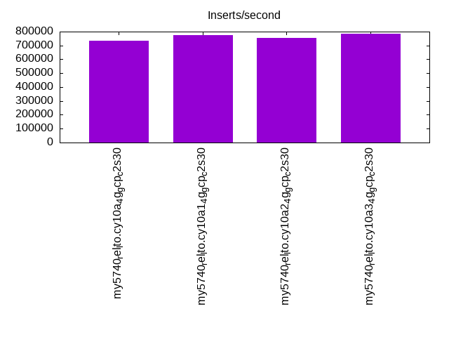
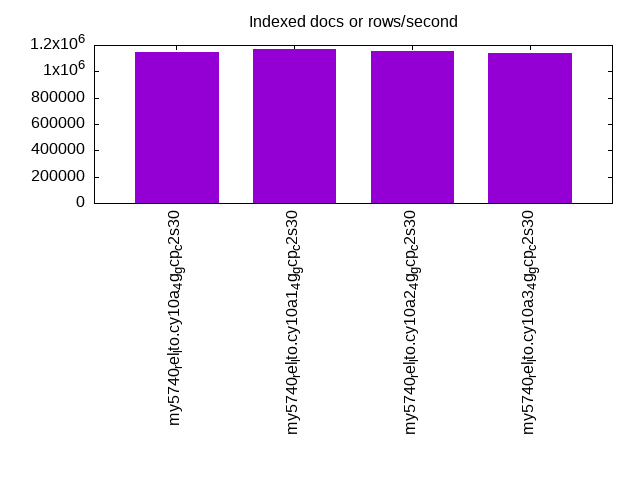
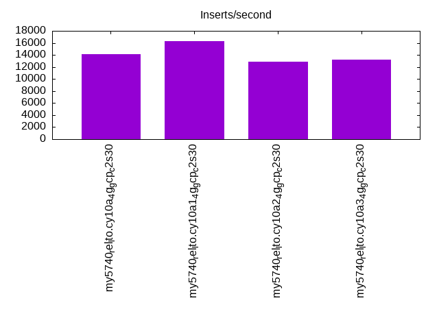
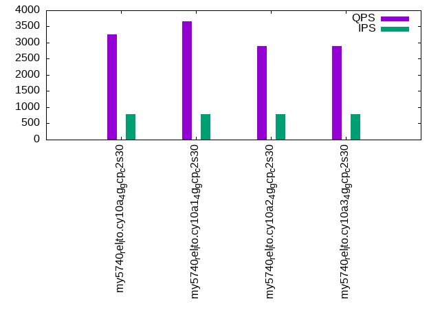
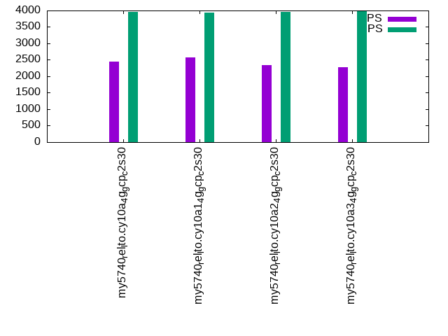
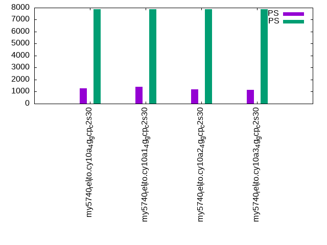

This is a report for the insert benchmark with 160M docs and 8 client(s). It is generated by scripts (bash, awk, sed) and Tufte might not be impressed. An overview of the insert benchmark is here and a short update is here. Below, by DBMS, I mean DBMS+version.config. An example is my8020.c10b40 where my means MySQL, 8020 is version 8.0.20 and c10b40 is the name for the configuration file.
The test server is a c2-standard-30 from GCP with 15 cores, hyperthreads disabled, 120G RAM, XFS + SW RAID 0 on 4 NVMe devices (1.5TB). The benchmark was run with 8 client and there were 1 or 3 connections per client (1 for queries or inserts without rate limits, 1+1 for rate limited inserts+deletes). There are 8 tables, client per table. It loads 160M rows without secondary indexes, creates secondary indexes, then inserts 800M rows with a delete per insert to avoid growing the table. It then does 3 read+write tests for 1800s each that do queries as fast as possible with 100, 500 and then 1000 inserts/second/client concurrent with the queries and 1000 deletes/second to avoid growing the table. The database is cached by the OS but not by InnoDB.
The tested DBMS are:
The numbers are inserts/s for l.i0 and l.i1, indexed docs (or rows) /s for l.x and queries/s for q*.2. The values are the average rate over the entire test for inserts (IPS) and queries (QPS). The range of values for IPS and QPS is split into 3 parts: bottom 25%, middle 50%, top 25%. Values in the bottom 25% have a red background, values in the top 25% have a green background and values in the middle have no color. A gray background is used for values that can be ignored because the DBMS did not sustain the target insert rate. Red backgrounds are not used when the minimum value is within 80% of the max value.
| dbms | l.i0 | l.x | l.i1 | q100.1 | q500.1 | q1000.1 |
|---|---|---|---|---|---|---|
| my5740_rel_lto.cy10a_4g_gcp_c2s30 | 733945 | 1143571 | 14164 | 3257 | 2440 | 1275 |
| my5740_rel_lto.cy10a1_4g_gcp_c2s30 | 772947 | 1168613 | 16330 | 3653 | 2581 | 1394 |
| my5740_rel_lto.cy10a2_4g_gcp_c2s30 | 754717 | 1151798 | 12837 | 2900 | 2344 | 1187 |
| my5740_rel_lto.cy10a3_4g_gcp_c2s30 | 784314 | 1135461 | 13175 | 2895 | 2267 | 1169 |
This table has relative throughput, throughput for the DBMS relative to the DBMS in the first line, using the absolute throughput from the previous table. Values less than 0.95 have a yellow background. Values greater than 1.05 have a blue background.
| dbms | l.i0 | l.x | l.i1 | q100.1 | q500.1 | q1000.1 |
|---|---|---|---|---|---|---|
| my5740_rel_lto.cy10a_4g_gcp_c2s30 | 1.00 | 1.00 | 1.00 | 1.00 | 1.00 | 1.00 |
| my5740_rel_lto.cy10a1_4g_gcp_c2s30 | 1.05 | 1.02 | 1.15 | 1.12 | 1.06 | 1.09 |
| my5740_rel_lto.cy10a2_4g_gcp_c2s30 | 1.03 | 1.01 | 0.91 | 0.89 | 0.96 | 0.93 |
| my5740_rel_lto.cy10a3_4g_gcp_c2s30 | 1.07 | 0.99 | 0.93 | 0.89 | 0.93 | 0.92 |
This lists the average rate of inserts/s for the tests that do inserts concurrent with queries. For such tests the query rate is listed in the table above. The read+write tests are setup so that the insert rate should match the target rate every second. Cells that are not at least 95% of the target have a red background to indicate a failure to satisfy the target.
| dbms | q100.1 | q500.1 | q1000.1 |
|---|---|---|---|
| my5740_rel_lto.cy10a_4g_gcp_c2s30 | 786 | 3947 | 7882 |
| my5740_rel_lto.cy10a1_4g_gcp_c2s30 | 784 | 3932 | 7869 |
| my5740_rel_lto.cy10a2_4g_gcp_c2s30 | 788 | 3965 | 7890 |
| my5740_rel_lto.cy10a3_4g_gcp_c2s30 | 789 | 3969 | 7890 |
| target | 800 | 4000 | 8000 |
l.i0: load without secondary indexes. Graphs for performance per 1-second interval are here.
Average throughput:
Insert response time histogram: each cell has the percentage of responses that take <= the time in the header and max is the max response time in seconds. For the max column values in the top 25% of the range have a red background and in the bottom 25% of the range have a green background. The red background is not used when the min value is within 80% of the max value.
| dbms | 256us | 1ms | 4ms | 16ms | 64ms | 256ms | 1s | 4s | 16s | gt | max |
|---|---|---|---|---|---|---|---|---|---|---|---|
| my5740_rel_lto.cy10a_4g_gcp_c2s30 | 87.532 | 12.210 | 0.219 | 0.025 | 0.014 | 0.001 | 0.267 | ||||
| my5740_rel_lto.cy10a1_4g_gcp_c2s30 | 94.679 | 5.047 | 0.235 | 0.025 | 0.014 | 0.001 | 0.267 | ||||
| my5740_rel_lto.cy10a2_4g_gcp_c2s30 | 89.475 | 10.267 | 0.219 | 0.025 | 0.014 | 0.234 | |||||
| my5740_rel_lto.cy10a3_4g_gcp_c2s30 | 94.528 | 5.205 | 0.231 | 0.022 | 0.014 | 0.001 | 0.260 |
Performance metrics for the DBMS listed above. Some are normalized by throughput, others are not. Legend for results is here.
ips qps rps rmbps wps wmbps rpq rkbpq wpi wkbpi csps cpups cspq cpupq dbgb1 dbgb2 rss maxop p50 p99 tag 733945 0 0 0.0 711.4 178.2 0.000 0.000 0.001 0.249 76140 66.4 0.104 14 10.6 139.1 4.5 0.267 100790 76617 160m.my5740_rel_lto.cy10a_4g_gcp_c2s30 772947 0 0 0.0 766.5 180.5 0.000 0.000 0.001 0.239 83851 68.6 0.108 13 10.6 139.1 4.5 0.267 106485 79614 160m.my5740_rel_lto.cy10a1_4g_gcp_c2s30 754717 0 0 0.0 730.0 182.4 0.000 0.000 0.001 0.248 77393 67.0 0.103 13 10.6 139.1 4.5 0.234 102789 74944 160m.my5740_rel_lto.cy10a2_4g_gcp_c2s30 784314 0 0 0.0 737.4 190.7 0.000 0.000 0.001 0.249 81668 69.1 0.104 13 10.6 139.1 4.5 0.260 108183 75718 160m.my5740_rel_lto.cy10a3_4g_gcp_c2s30
l.x: create secondary indexes.
Average throughput:
Performance metrics for the DBMS listed above. Some are normalized by throughput, others are not. Legend for results is here.
ips qps rps rmbps wps wmbps rpq rkbpq wpi wkbpi csps cpups cspq cpupq dbgb1 dbgb2 rss maxop p50 p99 tag 1143571 0 0 0.0 3637.2 909.1 0.000 0.000 0.003 0.814 40469 32.6 0.035 4 23.6 152.1 4.7 0.031 NA NA 160m.my5740_rel_lto.cy10a_4g_gcp_c2s30 1168613 0 0 0.0 3559.4 933.4 0.000 0.000 0.003 0.818 43427 34.5 0.037 4 23.6 152.1 4.7 0.026 NA NA 160m.my5740_rel_lto.cy10a1_4g_gcp_c2s30 1151798 0 0 0.0 3412.3 937.7 0.000 0.000 0.003 0.834 35297 33.7 0.031 4 23.6 152.1 4.7 0.031 NA NA 160m.my5740_rel_lto.cy10a2_4g_gcp_c2s30 1135461 0 0 0.0 3499.6 912.1 0.000 0.000 0.003 0.823 38394 33.0 0.034 4 23.6 152.1 4.7 0.030 NA NA 160m.my5740_rel_lto.cy10a3_4g_gcp_c2s30
l.i1: continue load after secondary indexes created. Graphs for performance per 1-second interval are here.
Average throughput:
Insert response time histogram: each cell has the percentage of responses that take <= the time in the header and max is the max response time in seconds. For the max column values in the top 25% of the range have a red background and in the bottom 25% of the range have a green background. The red background is not used when the min value is within 80% of the max value.
| dbms | 256us | 1ms | 4ms | 16ms | 64ms | 256ms | 1s | 4s | 16s | gt | max |
|---|---|---|---|---|---|---|---|---|---|---|---|
| my5740_rel_lto.cy10a_4g_gcp_c2s30 | 2.714 | 39.310 | 50.005 | 7.671 | 0.296 | 0.004 | 0.001 | 5.155 | |||
| my5740_rel_lto.cy10a1_4g_gcp_c2s30 | 1.948 | 52.199 | 40.350 | 5.041 | 0.461 | 0.003 | 3.240 | ||||
| my5740_rel_lto.cy10a2_4g_gcp_c2s30 | 2.813 | 31.148 | 57.043 | 8.658 | 0.336 | 0.002 | 3.521 | ||||
| my5740_rel_lto.cy10a3_4g_gcp_c2s30 | 2.778 | 31.924 | 56.945 | 8.041 | 0.311 | 0.770 |
Delete response time histogram: each cell has the percentage of responses that take <= the time in the header and max is the max response time in seconds. For the max column values in the top 25% of the range have a red background and in the bottom 25% of the range have a green background. The red background is not used when the min value is within 80% of the max value.
| dbms | 256us | 1ms | 4ms | 16ms | 64ms | 256ms | 1s | 4s | 16s | gt | max |
|---|---|---|---|---|---|---|---|---|---|---|---|
| my5740_rel_lto.cy10a_4g_gcp_c2s30 | 0.001 | 4.039 | 42.156 | 47.777 | 5.976 | 0.051 | 0.001 | 2.380 | |||
| my5740_rel_lto.cy10a1_4g_gcp_c2s30 | nonzero | 3.341 | 55.072 | 37.739 | 3.640 | 0.205 | 0.002 | 2.396 | |||
| my5740_rel_lto.cy10a2_4g_gcp_c2s30 | nonzero | 4.085 | 34.017 | 55.020 | 6.825 | 0.053 | 0.001 | 2.921 | |||
| my5740_rel_lto.cy10a3_4g_gcp_c2s30 | 0.001 | 4.023 | 34.830 | 54.877 | 6.236 | 0.034 | 0.516 |
Performance metrics for the DBMS listed above. Some are normalized by throughput, others are not. Legend for results is here.
ips qps rps rmbps wps wmbps rpq rkbpq wpi wkbpi csps cpups cspq cpupq dbgb1 dbgb2 rss maxop p50 p99 tag 14164 0 2 0.6 14620.9 449.0 0.000 0.040 1.032 32.462 134009 35.3 9.461 374 41.0 175.8 4.7 5.155 1799 150 160m.my5740_rel_lto.cy10a_4g_gcp_c2s30 16330 0 2 0.6 14173.8 468.7 0.000 0.036 0.868 29.391 168677 42.7 10.329 392 41.0 175.6 4.6 3.240 2098 150 160m.my5740_rel_lto.cy10a1_4g_gcp_c2s30 12837 0 2 0.5 14372.0 450.1 0.000 0.040 1.120 35.906 125770 32.3 9.798 377 41.1 176.0 4.7 3.521 1648 150 160m.my5740_rel_lto.cy10a2_4g_gcp_c2s30 13175 0 2 0.5 14855.9 462.5 0.000 0.039 1.128 35.946 129866 33.2 9.857 378 41.1 176.0 4.7 0.770 1698 150 160m.my5740_rel_lto.cy10a3_4g_gcp_c2s30
q100.1: range queries with 100 insert/s per client. Graphs for performance per 1-second interval are here.
Average throughput:
Query response time histogram: each cell has the percentage of responses that take <= the time in the header and max is the max response time in seconds. For max values in the top 25% of the range have a red background and in the bottom 25% of the range have a green background. The red background is not used when the min value is within 80% of the max value.
| dbms | 256us | 1ms | 4ms | 16ms | 64ms | 256ms | 1s | 4s | 16s | gt | max |
|---|---|---|---|---|---|---|---|---|---|---|---|
| my5740_rel_lto.cy10a_4g_gcp_c2s30 | 39.352 | 27.653 | 12.333 | 18.035 | 2.622 | 0.005 | nonzero | 0.277 | |||
| my5740_rel_lto.cy10a1_4g_gcp_c2s30 | 39.960 | 31.905 | 10.432 | 15.317 | 2.363 | 0.021 | 0.001 | 0.758 | |||
| my5740_rel_lto.cy10a2_4g_gcp_c2s30 | 38.547 | 26.170 | 11.719 | 20.568 | 2.988 | 0.008 | 0.189 | ||||
| my5740_rel_lto.cy10a3_4g_gcp_c2s30 | 38.290 | 26.215 | 11.714 | 20.828 | 2.945 | 0.007 | nonzero | 0.290 |
Insert response time histogram: each cell has the percentage of responses that take <= the time in the header and max is the max response time in seconds. For max values in the top 25% of the range have a red background and in the bottom 25% of the range have a green background. The red background is not used when the min value is within 80% of the max value.
| dbms | 256us | 1ms | 4ms | 16ms | 64ms | 256ms | 1s | 4s | 16s | gt | max |
|---|---|---|---|---|---|---|---|---|---|---|---|
| my5740_rel_lto.cy10a_4g_gcp_c2s30 | 29.906 | 52.667 | 17.378 | 0.049 | 0.139 | ||||||
| my5740_rel_lto.cy10a1_4g_gcp_c2s30 | 33.177 | 48.708 | 17.444 | 0.580 | 0.090 | 0.557 | |||||
| my5740_rel_lto.cy10a2_4g_gcp_c2s30 | 22.521 | 46.840 | 30.368 | 0.260 | 0.010 | 0.374 | |||||
| my5740_rel_lto.cy10a3_4g_gcp_c2s30 | 24.045 | 49.090 | 26.674 | 0.188 | 0.003 | 0.292 |
Delete response time histogram: each cell has the percentage of responses that take <= the time in the header and max is the max response time in seconds. For max values in the top 25% of the range have a red background and in the bottom 25% of the range have a green background. The red background is not used when the min value is within 80% of the max value.
| dbms | 256us | 1ms | 4ms | 16ms | 64ms | 256ms | 1s | 4s | 16s | gt | max |
|---|---|---|---|---|---|---|---|---|---|---|---|
| my5740_rel_lto.cy10a_4g_gcp_c2s30 | 31.344 | 52.212 | 16.399 | 0.045 | 0.186 | ||||||
| my5740_rel_lto.cy10a1_4g_gcp_c2s30 | 34.785 | 48.170 | 16.399 | 0.566 | 0.080 | 0.683 | |||||
| my5740_rel_lto.cy10a2_4g_gcp_c2s30 | 23.757 | 46.899 | 29.153 | 0.188 | 0.003 | 0.279 | |||||
| my5740_rel_lto.cy10a3_4g_gcp_c2s30 | 25.368 | 49.135 | 25.361 | 0.132 | 0.003 | 0.297 |
Performance metrics for the DBMS listed above. Some are normalized by throughput, others are not. Legend for results is here.
ips qps rps rmbps wps wmbps rpq rkbpq wpi wkbpi csps cpups cspq cpupq dbgb1 dbgb2 rss maxop p50 p99 tag 786 3257 9 0.3 17696.8 421.7 0.003 0.101 22.504 549.108 116510 15.4 35.771 709 41.0 175.8 4.6 0.277 432 96 160m.my5740_rel_lto.cy10a_4g_gcp_c2s30 784 3653 10 0.3 16823.1 420.6 0.003 0.085 21.450 549.189 121679 16.7 33.311 686 41.0 175.6 4.6 0.758 480 64 160m.my5740_rel_lto.cy10a1_4g_gcp_c2s30 788 2900 12 0.4 17226.2 422.6 0.004 0.129 21.858 549.071 112875 14.6 38.920 755 41.1 176.0 4.6 0.189 384 96 160m.my5740_rel_lto.cy10a2_4g_gcp_c2s30 789 2895 11 0.3 17249.0 416.9 0.004 0.112 21.873 541.402 112668 14.6 38.917 756 41.1 176.0 4.6 0.290 384 96 160m.my5740_rel_lto.cy10a3_4g_gcp_c2s30
q500.1: range queries with 500 insert/s per client. Graphs for performance per 1-second interval are here.
Average throughput:
Query response time histogram: each cell has the percentage of responses that take <= the time in the header and max is the max response time in seconds. For max values in the top 25% of the range have a red background and in the bottom 25% of the range have a green background. The red background is not used when the min value is within 80% of the max value.
| dbms | 256us | 1ms | 4ms | 16ms | 64ms | 256ms | 1s | 4s | 16s | gt | max |
|---|---|---|---|---|---|---|---|---|---|---|---|
| my5740_rel_lto.cy10a_4g_gcp_c2s30 | 27.612 | 30.580 | 14.390 | 23.324 | 4.076 | 0.017 | 0.143 | ||||
| my5740_rel_lto.cy10a1_4g_gcp_c2s30 | 27.951 | 35.169 | 12.257 | 20.615 | 3.964 | 0.041 | 0.003 | nonzero | 1.543 | ||
| my5740_rel_lto.cy10a2_4g_gcp_c2s30 | 27.820 | 29.911 | 13.791 | 23.988 | 4.473 | 0.017 | 0.154 | ||||
| my5740_rel_lto.cy10a3_4g_gcp_c2s30 | 27.174 | 30.189 | 13.366 | 24.482 | 4.769 | 0.019 | 0.160 |
Insert response time histogram: each cell has the percentage of responses that take <= the time in the header and max is the max response time in seconds. For max values in the top 25% of the range have a red background and in the bottom 25% of the range have a green background. The red background is not used when the min value is within 80% of the max value.
| dbms | 256us | 1ms | 4ms | 16ms | 64ms | 256ms | 1s | 4s | 16s | gt | max |
|---|---|---|---|---|---|---|---|---|---|---|---|
| my5740_rel_lto.cy10a_4g_gcp_c2s30 | 26.009 | 54.800 | 19.129 | 0.062 | 0.140 | ||||||
| my5740_rel_lto.cy10a1_4g_gcp_c2s30 | 25.582 | 52.047 | 21.426 | 0.801 | 0.128 | 0.015 | 1.693 | ||||
| my5740_rel_lto.cy10a2_4g_gcp_c2s30 | 28.797 | 54.107 | 17.057 | 0.040 | 0.119 | ||||||
| my5740_rel_lto.cy10a3_4g_gcp_c2s30 | 29.492 | 53.725 | 16.760 | 0.022 | 0.088 |
Delete response time histogram: each cell has the percentage of responses that take <= the time in the header and max is the max response time in seconds. For max values in the top 25% of the range have a red background and in the bottom 25% of the range have a green background. The red background is not used when the min value is within 80% of the max value.
| dbms | 256us | 1ms | 4ms | 16ms | 64ms | 256ms | 1s | 4s | 16s | gt | max |
|---|---|---|---|---|---|---|---|---|---|---|---|
| my5740_rel_lto.cy10a_4g_gcp_c2s30 | 27.228 | 54.202 | 18.522 | 0.047 | 0.139 | ||||||
| my5740_rel_lto.cy10a1_4g_gcp_c2s30 | 27.144 | 51.566 | 20.370 | 0.774 | 0.135 | 0.012 | 1.609 | ||||
| my5740_rel_lto.cy10a2_4g_gcp_c2s30 | 29.874 | 53.638 | 16.459 | 0.030 | 0.095 | ||||||
| my5740_rel_lto.cy10a3_4g_gcp_c2s30 | 30.179 | 53.785 | 16.017 | 0.019 | 0.094 |
Performance metrics for the DBMS listed above. Some are normalized by throughput, others are not. Legend for results is here.
ips qps rps rmbps wps wmbps rpq rkbpq wpi wkbpi csps cpups cspq cpupq dbgb1 dbgb2 rss maxop p50 p99 tag 3947 2440 55 1.2 17272.1 427.1 0.022 0.487 4.376 110.807 116510 17.5 47.760 1076 41.0 175.8 4.6 0.143 304 256 160m.my5740_rel_lto.cy10a_4g_gcp_c2s30 3932 2581 64 1.2 16777.1 434.5 0.025 0.489 4.267 113.151 124296 18.7 48.158 1087 41.0 175.6 4.6 1.543 336 32 160m.my5740_rel_lto.cy10a1_4g_gcp_c2s30 3965 2344 50 1.0 16877.5 430.3 0.021 0.447 4.257 111.145 115464 17.2 49.259 1101 41.1 176.0 4.6 0.154 288 240 160m.my5740_rel_lto.cy10a2_4g_gcp_c2s30 3969 2267 44 0.9 16525.2 415.6 0.019 0.423 4.163 107.215 112628 16.9 49.691 1118 41.1 176.0 4.6 0.160 288 224 160m.my5740_rel_lto.cy10a3_4g_gcp_c2s30
q1000.1: range queries with 1000 insert/s per client. Graphs for performance per 1-second interval are here.
Average throughput:
Query response time histogram: each cell has the percentage of responses that take <= the time in the header and max is the max response time in seconds. For max values in the top 25% of the range have a red background and in the bottom 25% of the range have a green background. The red background is not used when the min value is within 80% of the max value.
| dbms | 256us | 1ms | 4ms | 16ms | 64ms | 256ms | 1s | 4s | 16s | gt | max |
|---|---|---|---|---|---|---|---|---|---|---|---|
| my5740_rel_lto.cy10a_4g_gcp_c2s30 | 14.646 | 27.691 | 17.890 | 28.298 | 11.128 | 0.344 | 0.002 | 0.488 | |||
| my5740_rel_lto.cy10a1_4g_gcp_c2s30 | 15.386 | 31.311 | 17.122 | 26.224 | 9.569 | 0.378 | 0.010 | nonzero | 1.577 | ||
| my5740_rel_lto.cy10a2_4g_gcp_c2s30 | 14.781 | 26.949 | 16.474 | 29.353 | 11.916 | 0.524 | 0.003 | 0.560 | |||
| my5740_rel_lto.cy10a3_4g_gcp_c2s30 | 14.439 | 26.226 | 15.384 | 30.670 | 12.987 | 0.294 | nonzero | 0.373 |
Insert response time histogram: each cell has the percentage of responses that take <= the time in the header and max is the max response time in seconds. For max values in the top 25% of the range have a red background and in the bottom 25% of the range have a green background. The red background is not used when the min value is within 80% of the max value.
| dbms | 256us | 1ms | 4ms | 16ms | 64ms | 256ms | 1s | 4s | 16s | gt | max |
|---|---|---|---|---|---|---|---|---|---|---|---|
| my5740_rel_lto.cy10a_4g_gcp_c2s30 | 9.113 | 37.388 | 49.982 | 3.453 | 0.064 | 0.551 | |||||
| my5740_rel_lto.cy10a1_4g_gcp_c2s30 | 9.395 | 40.579 | 46.605 | 3.238 | 0.180 | 0.003 | 3.261 | ||||
| my5740_rel_lto.cy10a2_4g_gcp_c2s30 | 8.640 | 34.083 | 52.116 | 5.020 | 0.141 | 0.639 | |||||
| my5740_rel_lto.cy10a3_4g_gcp_c2s30 | 14.595 | 41.225 | 42.716 | 1.447 | 0.018 | 0.443 |
Delete response time histogram: each cell has the percentage of responses that take <= the time in the header and max is the max response time in seconds. For max values in the top 25% of the range have a red background and in the bottom 25% of the range have a green background. The red background is not used when the min value is within 80% of the max value.
| dbms | 256us | 1ms | 4ms | 16ms | 64ms | 256ms | 1s | 4s | 16s | gt | max |
|---|---|---|---|---|---|---|---|---|---|---|---|
| my5740_rel_lto.cy10a_4g_gcp_c2s30 | 9.784 | 38.263 | 49.109 | 2.807 | 0.037 | 0.763 | |||||
| my5740_rel_lto.cy10a1_4g_gcp_c2s30 | 10.135 | 41.565 | 45.376 | 2.775 | 0.146 | 0.003 | 1.827 | ||||
| my5740_rel_lto.cy10a2_4g_gcp_c2s30 | 8.948 | 34.731 | 51.878 | 4.363 | 0.081 | 0.584 | |||||
| my5740_rel_lto.cy10a3_4g_gcp_c2s30 | 15.281 | 41.796 | 41.789 | 1.127 | 0.007 | 0.430 |
Performance metrics for the DBMS listed above. Some are normalized by throughput, others are not. Legend for results is here.
ips qps rps rmbps wps wmbps rpq rkbpq wpi wkbpi csps cpups cspq cpupq dbgb1 dbgb2 rss maxop p50 p99 tag 7882 1275 77 1.5 16619.1 437.2 0.060 1.227 2.109 56.806 129851 24.2 101.812 2846 41.3 176.4 4.6 0.488 160 96 160m.my5740_rel_lto.cy10a_4g_gcp_c2s30 7869 1394 93 1.9 16529.8 452.6 0.067 1.401 2.101 58.893 143595 25.6 102.987 2754 41.2 176.1 4.6 1.577 176 80 160m.my5740_rel_lto.cy10a1_4g_gcp_c2s30 7890 1187 90 1.8 15970.2 430.9 0.076 1.531 2.024 55.925 130022 24.1 109.575 3047 41.5 176.8 4.6 0.560 144 64 160m.my5740_rel_lto.cy10a2_4g_gcp_c2s30 7890 1169 59 1.2 16159.3 425.6 0.050 1.010 2.048 55.232 125483 22.6 107.315 2899 41.5 176.8 4.6 0.373 144 80 160m.my5740_rel_lto.cy10a3_4g_gcp_c2s30
l.i0: load without secondary indexes
Performance metrics for all DBMS, not just the ones listed above. Some are normalized by throughput, others are not. Legend for results is here.
ips qps rps rmbps wps wmbps rpq rkbpq wpi wkbpi csps cpups cspq cpupq dbgb1 dbgb2 rss maxop p50 p99 tag 733945 0 0 0.0 711.4 178.2 0.000 0.000 0.001 0.249 76140 66.4 0.104 14 10.6 139.1 4.5 0.267 100790 76617 160m.my5740_rel_lto.cy10a_4g_gcp_c2s30 772947 0 0 0.0 766.5 180.5 0.000 0.000 0.001 0.239 83851 68.6 0.108 13 10.6 139.1 4.5 0.267 106485 79614 160m.my5740_rel_lto.cy10a1_4g_gcp_c2s30 754717 0 0 0.0 730.0 182.4 0.000 0.000 0.001 0.248 77393 67.0 0.103 13 10.6 139.1 4.5 0.234 102789 74944 160m.my5740_rel_lto.cy10a2_4g_gcp_c2s30 784314 0 0 0.0 737.4 190.7 0.000 0.000 0.001 0.249 81668 69.1 0.104 13 10.6 139.1 4.5 0.260 108183 75718 160m.my5740_rel_lto.cy10a3_4g_gcp_c2s30
l.x: create secondary indexes
Performance metrics for all DBMS, not just the ones listed above. Some are normalized by throughput, others are not. Legend for results is here.
ips qps rps rmbps wps wmbps rpq rkbpq wpi wkbpi csps cpups cspq cpupq dbgb1 dbgb2 rss maxop p50 p99 tag 1143571 0 0 0.0 3637.2 909.1 0.000 0.000 0.003 0.814 40469 32.6 0.035 4 23.6 152.1 4.7 0.031 NA NA 160m.my5740_rel_lto.cy10a_4g_gcp_c2s30 1168613 0 0 0.0 3559.4 933.4 0.000 0.000 0.003 0.818 43427 34.5 0.037 4 23.6 152.1 4.7 0.026 NA NA 160m.my5740_rel_lto.cy10a1_4g_gcp_c2s30 1151798 0 0 0.0 3412.3 937.7 0.000 0.000 0.003 0.834 35297 33.7 0.031 4 23.6 152.1 4.7 0.031 NA NA 160m.my5740_rel_lto.cy10a2_4g_gcp_c2s30 1135461 0 0 0.0 3499.6 912.1 0.000 0.000 0.003 0.823 38394 33.0 0.034 4 23.6 152.1 4.7 0.030 NA NA 160m.my5740_rel_lto.cy10a3_4g_gcp_c2s30
l.i1: continue load after secondary indexes created
Performance metrics for all DBMS, not just the ones listed above. Some are normalized by throughput, others are not. Legend for results is here.
ips qps rps rmbps wps wmbps rpq rkbpq wpi wkbpi csps cpups cspq cpupq dbgb1 dbgb2 rss maxop p50 p99 tag 14164 0 2 0.6 14620.9 449.0 0.000 0.040 1.032 32.462 134009 35.3 9.461 374 41.0 175.8 4.7 5.155 1799 150 160m.my5740_rel_lto.cy10a_4g_gcp_c2s30 16330 0 2 0.6 14173.8 468.7 0.000 0.036 0.868 29.391 168677 42.7 10.329 392 41.0 175.6 4.6 3.240 2098 150 160m.my5740_rel_lto.cy10a1_4g_gcp_c2s30 12837 0 2 0.5 14372.0 450.1 0.000 0.040 1.120 35.906 125770 32.3 9.798 377 41.1 176.0 4.7 3.521 1648 150 160m.my5740_rel_lto.cy10a2_4g_gcp_c2s30 13175 0 2 0.5 14855.9 462.5 0.000 0.039 1.128 35.946 129866 33.2 9.857 378 41.1 176.0 4.7 0.770 1698 150 160m.my5740_rel_lto.cy10a3_4g_gcp_c2s30
q100.1: range queries with 100 insert/s per client
Performance metrics for all DBMS, not just the ones listed above. Some are normalized by throughput, others are not. Legend for results is here.
ips qps rps rmbps wps wmbps rpq rkbpq wpi wkbpi csps cpups cspq cpupq dbgb1 dbgb2 rss maxop p50 p99 tag 786 3257 9 0.3 17696.8 421.7 0.003 0.101 22.504 549.108 116510 15.4 35.771 709 41.0 175.8 4.6 0.277 432 96 160m.my5740_rel_lto.cy10a_4g_gcp_c2s30 784 3653 10 0.3 16823.1 420.6 0.003 0.085 21.450 549.189 121679 16.7 33.311 686 41.0 175.6 4.6 0.758 480 64 160m.my5740_rel_lto.cy10a1_4g_gcp_c2s30 788 2900 12 0.4 17226.2 422.6 0.004 0.129 21.858 549.071 112875 14.6 38.920 755 41.1 176.0 4.6 0.189 384 96 160m.my5740_rel_lto.cy10a2_4g_gcp_c2s30 789 2895 11 0.3 17249.0 416.9 0.004 0.112 21.873 541.402 112668 14.6 38.917 756 41.1 176.0 4.6 0.290 384 96 160m.my5740_rel_lto.cy10a3_4g_gcp_c2s30
q500.1: range queries with 500 insert/s per client
Performance metrics for all DBMS, not just the ones listed above. Some are normalized by throughput, others are not. Legend for results is here.
ips qps rps rmbps wps wmbps rpq rkbpq wpi wkbpi csps cpups cspq cpupq dbgb1 dbgb2 rss maxop p50 p99 tag 3947 2440 55 1.2 17272.1 427.1 0.022 0.487 4.376 110.807 116510 17.5 47.760 1076 41.0 175.8 4.6 0.143 304 256 160m.my5740_rel_lto.cy10a_4g_gcp_c2s30 3932 2581 64 1.2 16777.1 434.5 0.025 0.489 4.267 113.151 124296 18.7 48.158 1087 41.0 175.6 4.6 1.543 336 32 160m.my5740_rel_lto.cy10a1_4g_gcp_c2s30 3965 2344 50 1.0 16877.5 430.3 0.021 0.447 4.257 111.145 115464 17.2 49.259 1101 41.1 176.0 4.6 0.154 288 240 160m.my5740_rel_lto.cy10a2_4g_gcp_c2s30 3969 2267 44 0.9 16525.2 415.6 0.019 0.423 4.163 107.215 112628 16.9 49.691 1118 41.1 176.0 4.6 0.160 288 224 160m.my5740_rel_lto.cy10a3_4g_gcp_c2s30
q1000.1: range queries with 1000 insert/s per client
Performance metrics for all DBMS, not just the ones listed above. Some are normalized by throughput, others are not. Legend for results is here.
ips qps rps rmbps wps wmbps rpq rkbpq wpi wkbpi csps cpups cspq cpupq dbgb1 dbgb2 rss maxop p50 p99 tag 7882 1275 77 1.5 16619.1 437.2 0.060 1.227 2.109 56.806 129851 24.2 101.812 2846 41.3 176.4 4.6 0.488 160 96 160m.my5740_rel_lto.cy10a_4g_gcp_c2s30 7869 1394 93 1.9 16529.8 452.6 0.067 1.401 2.101 58.893 143595 25.6 102.987 2754 41.2 176.1 4.6 1.577 176 80 160m.my5740_rel_lto.cy10a1_4g_gcp_c2s30 7890 1187 90 1.8 15970.2 430.9 0.076 1.531 2.024 55.925 130022 24.1 109.575 3047 41.5 176.8 4.6 0.560 144 64 160m.my5740_rel_lto.cy10a2_4g_gcp_c2s30 7890 1169 59 1.2 16159.3 425.6 0.050 1.010 2.048 55.232 125483 22.6 107.315 2899 41.5 176.8 4.6 0.373 144 80 160m.my5740_rel_lto.cy10a3_4g_gcp_c2s30
Insert response time histogram
256us 1ms 4ms 16ms 64ms 256ms 1s 4s 16s gt max tag 0.000 87.532 12.210 0.219 0.025 0.014 0.001 0.000 0.000 0.000 0.267 my5740_rel_lto.cy10a_4g_gcp_c2s30 0.000 94.679 5.047 0.235 0.025 0.014 0.001 0.000 0.000 0.000 0.267 my5740_rel_lto.cy10a1_4g_gcp_c2s30 0.000 89.475 10.267 0.219 0.025 0.014 0.000 0.000 0.000 0.000 0.234 my5740_rel_lto.cy10a2_4g_gcp_c2s30 0.000 94.528 5.205 0.231 0.022 0.014 0.001 0.000 0.000 0.000 0.260 my5740_rel_lto.cy10a3_4g_gcp_c2s30
TODO - determine whether there is data for create index response time
Insert response time histogram
256us 1ms 4ms 16ms 64ms 256ms 1s 4s 16s gt max tag 0.000 0.000 2.714 39.310 50.005 7.671 0.296 0.004 0.001 0.000 5.155 my5740_rel_lto.cy10a_4g_gcp_c2s30 0.000 0.000 1.948 52.199 40.350 5.041 0.461 0.003 0.000 0.000 3.240 my5740_rel_lto.cy10a1_4g_gcp_c2s30 0.000 0.000 2.813 31.148 57.043 8.658 0.336 0.002 0.000 0.000 3.521 my5740_rel_lto.cy10a2_4g_gcp_c2s30 0.000 0.000 2.778 31.924 56.945 8.041 0.311 0.000 0.000 0.000 0.770 my5740_rel_lto.cy10a3_4g_gcp_c2s30
Delete response time histogram
256us 1ms 4ms 16ms 64ms 256ms 1s 4s 16s gt max tag 0.000 0.001 4.039 42.156 47.777 5.976 0.051 0.001 0.000 0.000 2.380 my5740_rel_lto.cy10a_4g_gcp_c2s30 0.000 nonzero 3.341 55.072 37.739 3.640 0.205 0.002 0.000 0.000 2.396 my5740_rel_lto.cy10a1_4g_gcp_c2s30 0.000 nonzero 4.085 34.017 55.020 6.825 0.053 0.001 0.000 0.000 2.921 my5740_rel_lto.cy10a2_4g_gcp_c2s30 0.000 0.001 4.023 34.830 54.877 6.236 0.034 0.000 0.000 0.000 0.516 my5740_rel_lto.cy10a3_4g_gcp_c2s30
Query response time histogram
256us 1ms 4ms 16ms 64ms 256ms 1s 4s 16s gt max tag 39.352 27.653 12.333 18.035 2.622 0.005 nonzero 0.000 0.000 0.000 0.277 my5740_rel_lto.cy10a_4g_gcp_c2s30 39.960 31.905 10.432 15.317 2.363 0.021 0.001 0.000 0.000 0.000 0.758 my5740_rel_lto.cy10a1_4g_gcp_c2s30 38.547 26.170 11.719 20.568 2.988 0.008 0.000 0.000 0.000 0.000 0.189 my5740_rel_lto.cy10a2_4g_gcp_c2s30 38.290 26.215 11.714 20.828 2.945 0.007 nonzero 0.000 0.000 0.000 0.290 my5740_rel_lto.cy10a3_4g_gcp_c2s30
Insert response time histogram
256us 1ms 4ms 16ms 64ms 256ms 1s 4s 16s gt max tag 0.000 0.000 29.906 52.667 17.378 0.049 0.000 0.000 0.000 0.000 0.139 my5740_rel_lto.cy10a_4g_gcp_c2s30 0.000 0.000 33.177 48.708 17.444 0.580 0.090 0.000 0.000 0.000 0.557 my5740_rel_lto.cy10a1_4g_gcp_c2s30 0.000 0.000 22.521 46.840 30.368 0.260 0.010 0.000 0.000 0.000 0.374 my5740_rel_lto.cy10a2_4g_gcp_c2s30 0.000 0.000 24.045 49.090 26.674 0.188 0.003 0.000 0.000 0.000 0.292 my5740_rel_lto.cy10a3_4g_gcp_c2s30
Delete response time histogram
256us 1ms 4ms 16ms 64ms 256ms 1s 4s 16s gt max tag 0.000 0.000 31.344 52.212 16.399 0.045 0.000 0.000 0.000 0.000 0.186 my5740_rel_lto.cy10a_4g_gcp_c2s30 0.000 0.000 34.785 48.170 16.399 0.566 0.080 0.000 0.000 0.000 0.683 my5740_rel_lto.cy10a1_4g_gcp_c2s30 0.000 0.000 23.757 46.899 29.153 0.188 0.003 0.000 0.000 0.000 0.279 my5740_rel_lto.cy10a2_4g_gcp_c2s30 0.000 0.000 25.368 49.135 25.361 0.132 0.003 0.000 0.000 0.000 0.297 my5740_rel_lto.cy10a3_4g_gcp_c2s30
Query response time histogram
256us 1ms 4ms 16ms 64ms 256ms 1s 4s 16s gt max tag 27.612 30.580 14.390 23.324 4.076 0.017 0.000 0.000 0.000 0.000 0.143 my5740_rel_lto.cy10a_4g_gcp_c2s30 27.951 35.169 12.257 20.615 3.964 0.041 0.003 nonzero 0.000 0.000 1.543 my5740_rel_lto.cy10a1_4g_gcp_c2s30 27.820 29.911 13.791 23.988 4.473 0.017 0.000 0.000 0.000 0.000 0.154 my5740_rel_lto.cy10a2_4g_gcp_c2s30 27.174 30.189 13.366 24.482 4.769 0.019 0.000 0.000 0.000 0.000 0.160 my5740_rel_lto.cy10a3_4g_gcp_c2s30
Insert response time histogram
256us 1ms 4ms 16ms 64ms 256ms 1s 4s 16s gt max tag 0.000 0.000 26.009 54.800 19.129 0.062 0.000 0.000 0.000 0.000 0.140 my5740_rel_lto.cy10a_4g_gcp_c2s30 0.000 0.000 25.582 52.047 21.426 0.801 0.128 0.015 0.000 0.000 1.693 my5740_rel_lto.cy10a1_4g_gcp_c2s30 0.000 0.000 28.797 54.107 17.057 0.040 0.000 0.000 0.000 0.000 0.119 my5740_rel_lto.cy10a2_4g_gcp_c2s30 0.000 0.000 29.492 53.725 16.760 0.022 0.000 0.000 0.000 0.000 0.088 my5740_rel_lto.cy10a3_4g_gcp_c2s30
Delete response time histogram
256us 1ms 4ms 16ms 64ms 256ms 1s 4s 16s gt max tag 0.000 0.000 27.228 54.202 18.522 0.047 0.000 0.000 0.000 0.000 0.139 my5740_rel_lto.cy10a_4g_gcp_c2s30 0.000 0.000 27.144 51.566 20.370 0.774 0.135 0.012 0.000 0.000 1.609 my5740_rel_lto.cy10a1_4g_gcp_c2s30 0.000 0.000 29.874 53.638 16.459 0.030 0.000 0.000 0.000 0.000 0.095 my5740_rel_lto.cy10a2_4g_gcp_c2s30 0.000 0.000 30.179 53.785 16.017 0.019 0.000 0.000 0.000 0.000 0.094 my5740_rel_lto.cy10a3_4g_gcp_c2s30
Query response time histogram
256us 1ms 4ms 16ms 64ms 256ms 1s 4s 16s gt max tag 14.646 27.691 17.890 28.298 11.128 0.344 0.002 0.000 0.000 0.000 0.488 my5740_rel_lto.cy10a_4g_gcp_c2s30 15.386 31.311 17.122 26.224 9.569 0.378 0.010 nonzero 0.000 0.000 1.577 my5740_rel_lto.cy10a1_4g_gcp_c2s30 14.781 26.949 16.474 29.353 11.916 0.524 0.003 0.000 0.000 0.000 0.560 my5740_rel_lto.cy10a2_4g_gcp_c2s30 14.439 26.226 15.384 30.670 12.987 0.294 nonzero 0.000 0.000 0.000 0.373 my5740_rel_lto.cy10a3_4g_gcp_c2s30
Insert response time histogram
256us 1ms 4ms 16ms 64ms 256ms 1s 4s 16s gt max tag 0.000 0.000 9.113 37.388 49.982 3.453 0.064 0.000 0.000 0.000 0.551 my5740_rel_lto.cy10a_4g_gcp_c2s30 0.000 0.000 9.395 40.579 46.605 3.238 0.180 0.003 0.000 0.000 3.261 my5740_rel_lto.cy10a1_4g_gcp_c2s30 0.000 0.000 8.640 34.083 52.116 5.020 0.141 0.000 0.000 0.000 0.639 my5740_rel_lto.cy10a2_4g_gcp_c2s30 0.000 0.000 14.595 41.225 42.716 1.447 0.018 0.000 0.000 0.000 0.443 my5740_rel_lto.cy10a3_4g_gcp_c2s30
Delete response time histogram
256us 1ms 4ms 16ms 64ms 256ms 1s 4s 16s gt max tag 0.000 0.000 9.784 38.263 49.109 2.807 0.037 0.000 0.000 0.000 0.763 my5740_rel_lto.cy10a_4g_gcp_c2s30 0.000 0.000 10.135 41.565 45.376 2.775 0.146 0.003 0.000 0.000 1.827 my5740_rel_lto.cy10a1_4g_gcp_c2s30 0.000 0.000 8.948 34.731 51.878 4.363 0.081 0.000 0.000 0.000 0.584 my5740_rel_lto.cy10a2_4g_gcp_c2s30 0.000 0.000 15.281 41.796 41.789 1.127 0.007 0.000 0.000 0.000 0.430 my5740_rel_lto.cy10a3_4g_gcp_c2s30